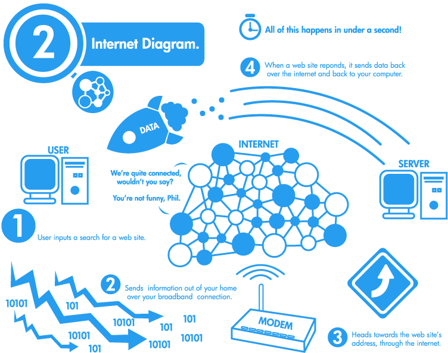

By: Shelby Gleason
Memory/RAM: 8-32 GB RAM or as much as you can afford (ideally at least
16GB)
Processor: Multi-core Intel i5/i7/i9 models (i9 is best). Preferably 4 or
more processor
cores.
Storage: At least 256 GB hard drive, 7200 RPM, preferably SSD (fastest),
HDD also good...
buy as much as you can afford, you can always add external hard drives. Avoid SATA drive if
possible.
Graphics card: Depends on video editing software. For example, Premiere Pro
and Davinci
Resolve do well with both AMD and NVIDIA. (Minimum 2GB memory)
Operating System: Windows 7 (64 bit edition), Mac OS X, Linux (Your OS will
likely determine
the editing software you go with)
Screen Size:19-21 inch minimum
Firewire or Thunderbolt Port built in or as an external dock

5 Basic Components of a Computer: